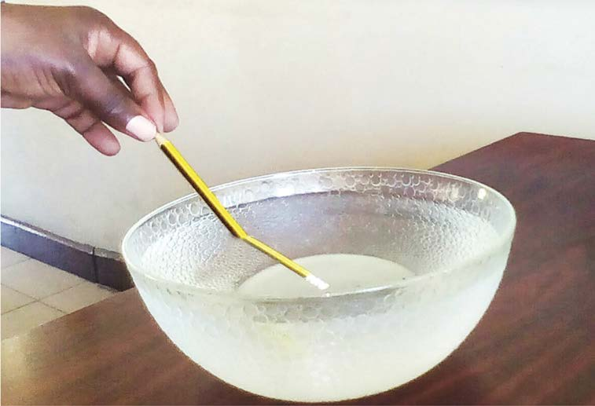

Kupinda kwa miale ya mwanga
Sifa nyingine ya mwanga ni kupinda kwa miale ya mwanga. Miale ya mwanga hupinda inapotoka midia moja angavu kwenda midia nyingine angavu. Kwa mfano, kutoka kwenye midia ya hewa kwenda midia ya maji. Kwa hiyo, mwanga utapita kwenye hewa kwenda kwenye maji, miale ya mwanga huo hupinda. Hatuoni miale ya mwanga ikipinda bali tunaona matokeo ya kupinda kwa miale ya mwanga. Chunguza Kielelezo namba 12, kisha fanya jaribio linalofuata.

Maelezo ya picha: Mkono umeshika penseli ndani ya bakuli la maji. Sehemu ya penseli iliyo majini inaonekana kama imepinda.Kielelezo namba 12: matokeo ya kupinda kwa miale ya mwanga.
Jaribio namba 8: Kuchunguza kupinda kwa miale ya mwanga
Lengo: Kuonesha miale ya mwanga inavyopinda
Mahitaji: Bakuli angavu au bika, maji safi ndani ya jagi, penseli, programu saidizi na kipimajoto sauti. Bakuli angavu au bika, maji safi ndani ya jagi na penseli